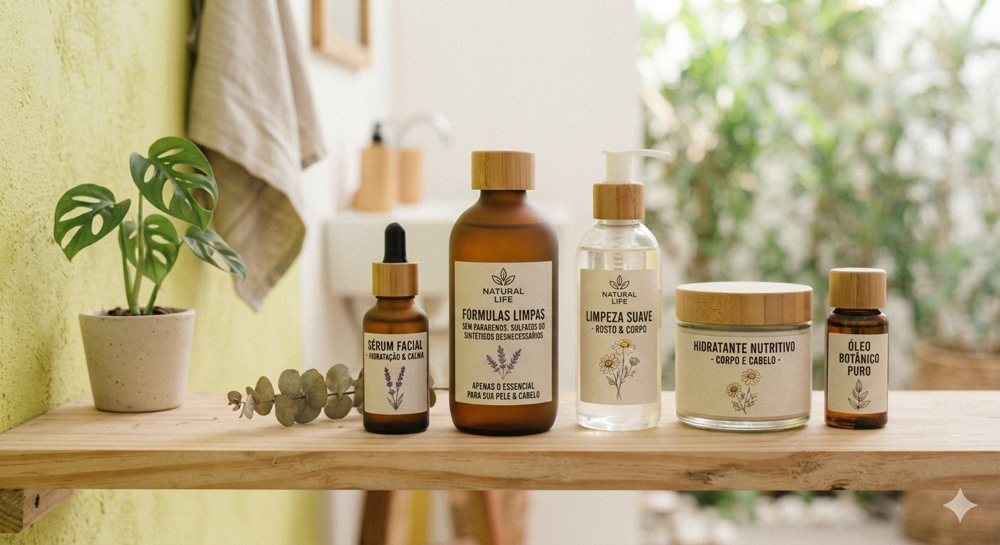
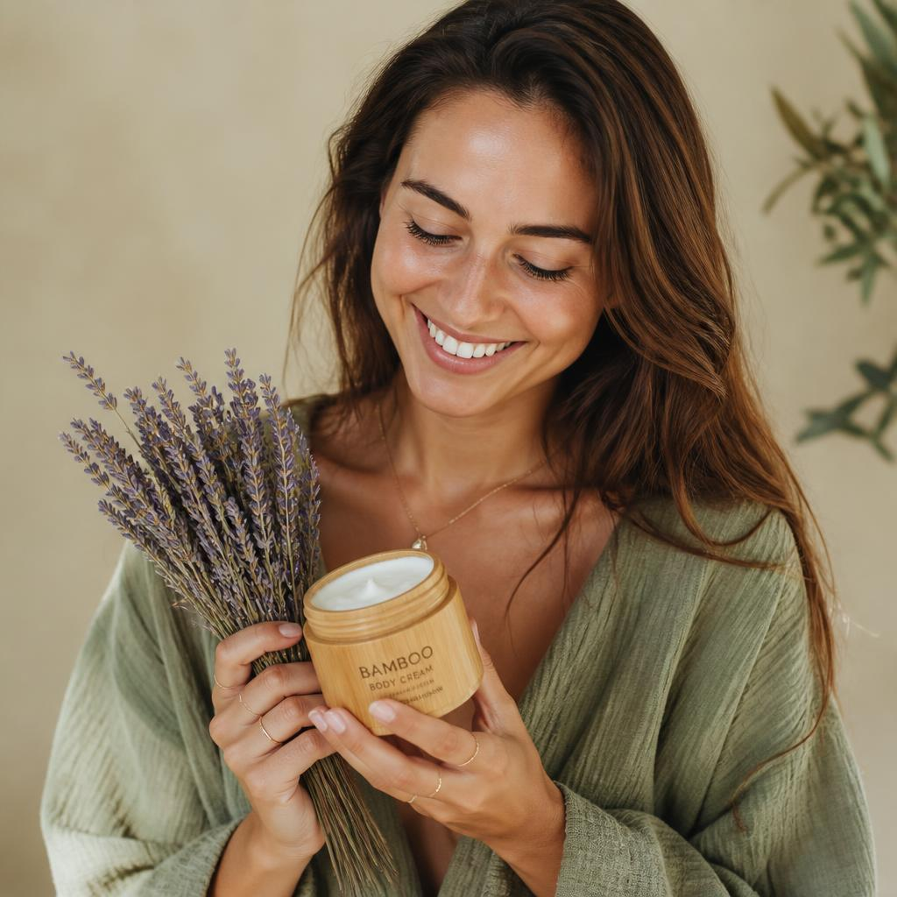

Nossa História
A Natural Life nasceu do desejo de reconectar o cuidado pessoal com a simplicidade e o poder da natureza.

Origem vegetal
Trabalhamos com extratos, óleos e ativos de origem vegetal, escolhidos a dedo por sua pureza e eficácia.

Formulas LimpasSem parabenos, sulfatos ou ingredientes sintéticos desnecessários. Apenas o essencial para sua pele e cabelo.
Ciclo consciente
Embalagens recicláveis, fornecedores locais e processos que respeitam o tempo de regeneração da natureza